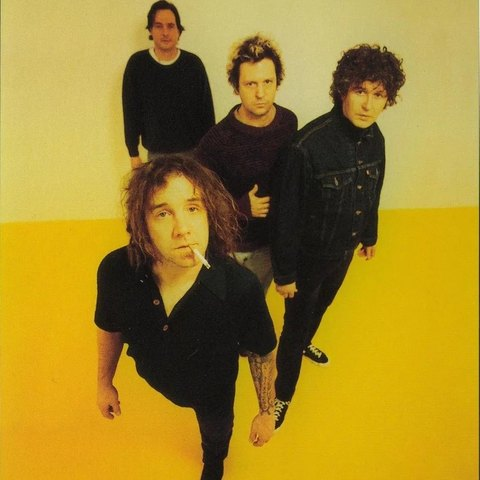

“올해 최고의
밤이었다.”
MOMENTS
24 PHOTOSARTISTS I SAW
2 / 12-
페퍼톤스

-
이소라

- 터치드
- +9 더 보기
REVIEW
이소라 ‘바람이 분다’에서 다 같이 조용해진 순간이 아직도 생생함. 가을 올림픽공원 날씨도 완벽했고, 내년에도 꼭 가고 싶은 페스티벌.
WRITTEN OCT 19, 2026
인스타그램 스토리에 공유했어요
SHARE REPORT